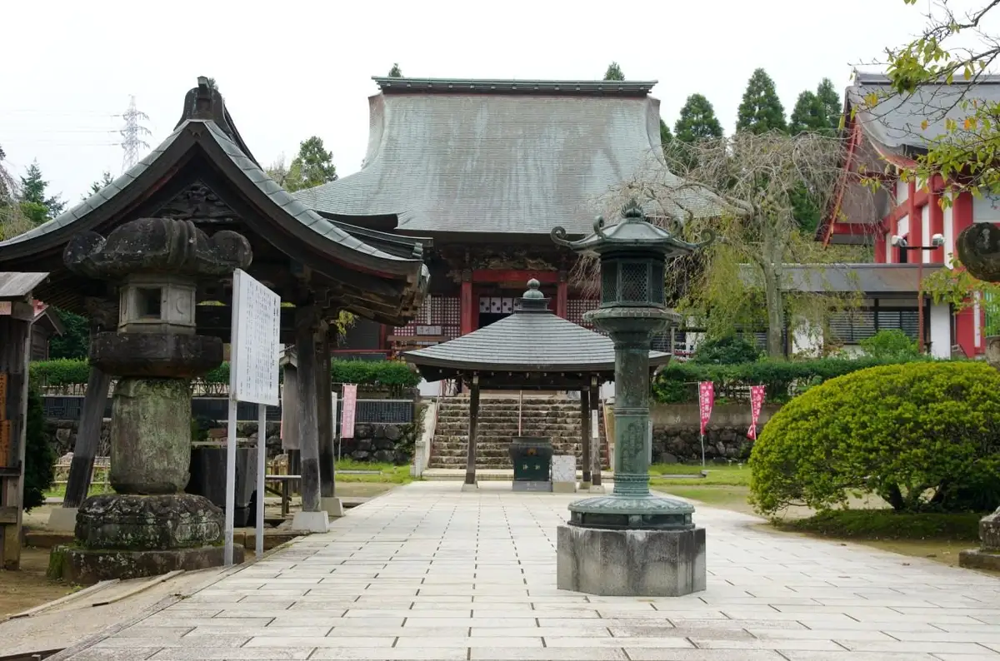
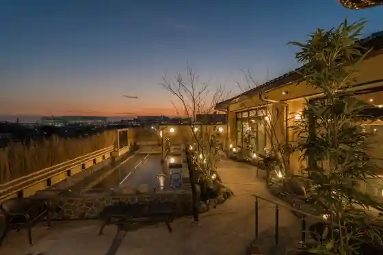
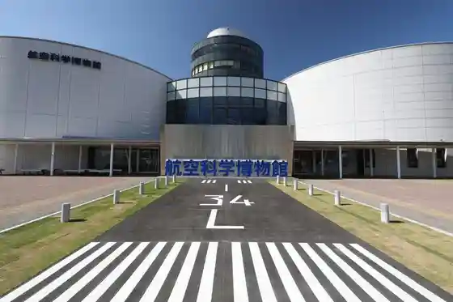
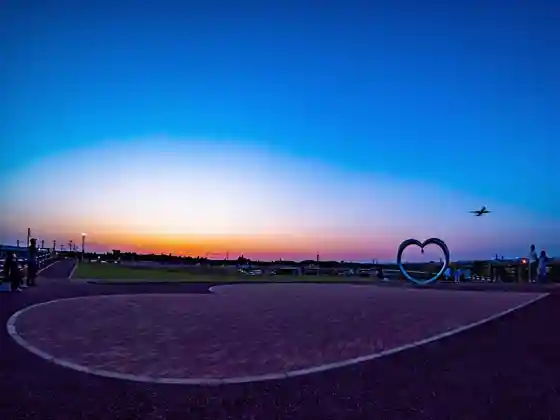

Japan / Chiba / Shibayama
Shibayama
Shibayama · Chiba
Shibayama
Highlighted on the Chiba map.

Sights
Naritakuko Onsen Sora Baths
Shibayama, Chiba · 0479-78-2615 · Official / source link

Koku Kagaku Museum
Shibayama, Chiba · 0479-78-0557 · Official / source link

Hikoki no Oka
Shibayama, Chiba · 0479-77-3909 · Official / source link

Sora no Eki Kaze Wa Sato Shibayama
Shibayama, Chiba · 0479-77-2020 · Official / source link
ANA O Shigoto Taiken Kyoshitsu / Koku Kagaku Museum
Shibayama, Chiba · 0479-78-0557 · Official / source link
Shibayama Ritsu Shibayama Burial Mound Haniwa Museum
Shibayama, Chiba · 0479-77-1828 · Official / source link
Roadside Station Kaze Wa Sato Shibayama
Shibayama, Chiba · 0479-70-8877 · Official / source link
Guriinpotoeko Aguri Park
Shibayama, Chiba · 0479-77-3919 · Official / source link
Kuhi Bu Manabi Sha Rabo
Shibayama, Chiba · 0479-74-3284 · Official / source link
Shibayama Nio Mikoto Kannon Kyo Tera
Shibayama, Chiba · 0479-77-0004 · Official / source link